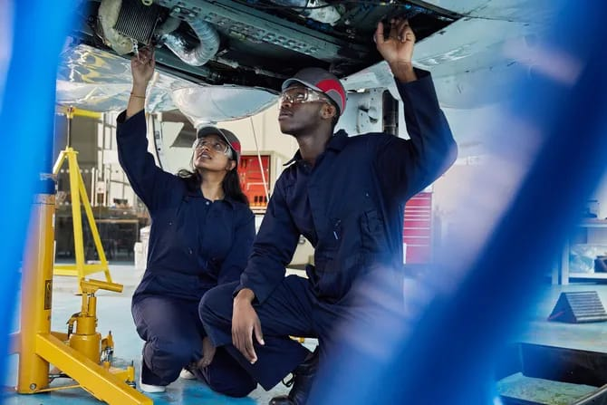
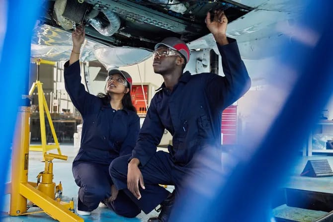
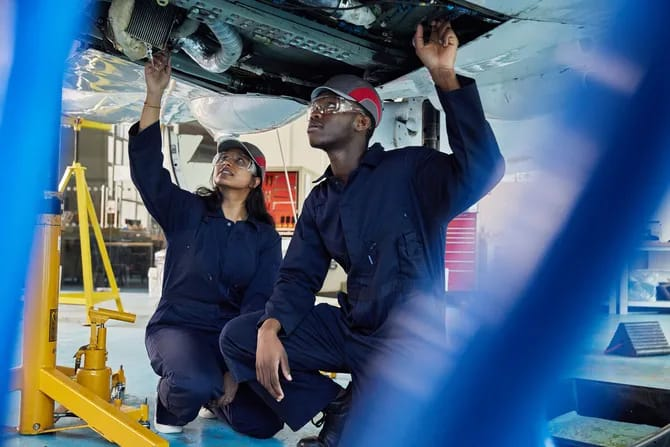
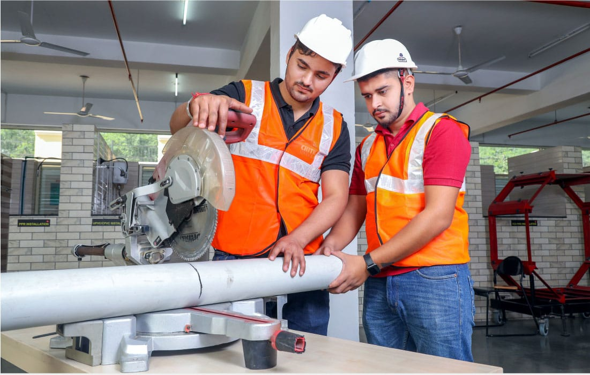
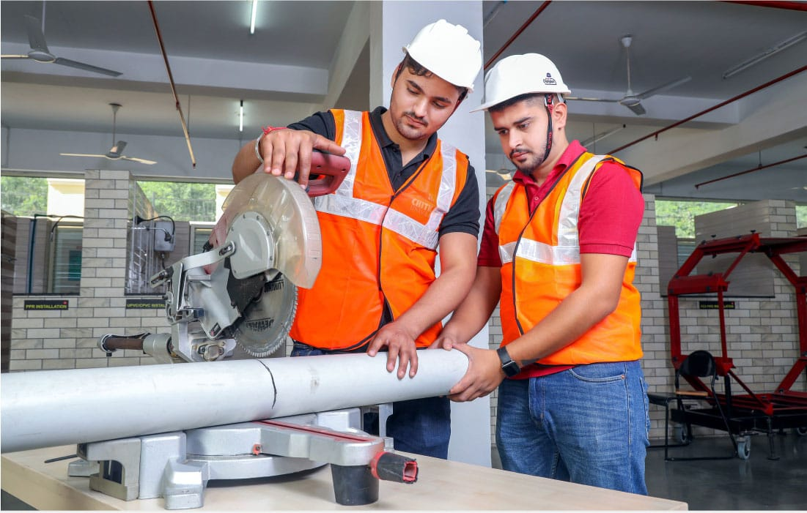

.jpg)
.jpg)
.jpg) 
HOME ADMINISTRATION FACULTIES ACADEMICS RESEARCH STUDENT NEWS ABOUT US
FACULTIES
The faculties and departments of the university form the
academic core of the institution, each specializing in a particular field of
study or research. Faculties are broader divisions such as Arts, Science,
Engineering, Business, and Health Sciences, while departments operate within
these faculties, focusing on specific disciplines like Mathematics, History,
Computer Science, or Economics. Each department is staffed by qualified
lecturers, researchers, and professors who are dedicated to delivering
high-quality education and advancing knowledge through research and innovation.
These academic units offer a wide range of undergraduate,
postgraduate, and professional programs designed to equip students with both
theoretical knowledge and practical skills. Departments often collaborate across
disciplines to offer interdisciplinary programs and conduct impactful research
that addresses real-world challenges. With well-structured curricula, modern
facilities, and a strong focus on academic excellence, the faculties and
departments work together to nurture critical thinking, creativity, and lifelong
learning among students.
Mechanical Engineering is a dynamic and versatile field
that forms the backbone of many modern industries. It involves the design,
analysis, manufacturing, and maintenance of mechanical systems, from tiny
components like sensors and microdevices to large-scale machinery like turbines
and engines.
Students in this program explore key areas such as:
Career opportunities for mechanical engineers are vast.
Graduates can work in sectors like automotive engineering, aerospace design,
power generation, robotics, renewable energy, biomedical devices, and even
artificial intelligence when applied to mechanical systems.

(II) Civil Engineering
Civil Engineering is all about designing, building, and
maintaining the physical and naturally built environment. It’s the field
responsible for much of the infrastructure we rely on every day — roads,
bridges, airports, tunnels, water systems, and buildings.
The course offers hands-on training and theoretical
knowledge in areas like:
Students also learn how to use industry-standard software
like AutoCAD, STAAD Pro, and GIS tools. Civil engineers are essential to public
and private sector development, and they play a key role in sustainable urban
planning and disaster risk management.
.jpg)
.jpg) 

C
Electrical Engineering is at the core of the digital
revolution. It covers everything from power generation and transmission to
electronics, computing, and communications. It’s a field that not only powers
homes and industries but also enables smart technologies and connected systems.
Throughout the course, students gain deep knowledge in:
Electrical engineers are in high demand across various
industries, including telecommunications, aerospace, renewable energy,
electronics design, embedded systems, and smart city technologies. This course
also builds a strong foundation for those interested in fields like robotics,
AI, and the Internet of Things (IoT).
.jpg)
.jpg)

Electracl Engineering students during labaratory sessions